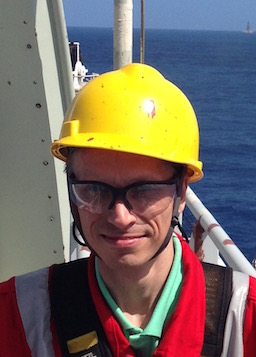

Who is Johnsen Offshore?
Johnsen Offshore is a maritime and offshore consultancy and agency. Our focus is offering our services and products to the Brazilian and South American Maritime and Offshore markets.
Consultants
Our Maritime Consultants are recruited with a wide experience within different parts of Maritime Industry. We can offer a wide range of consultant services, including Movement of Cargo, Planning and Execution of Heavy Lifts, Clearance of Vessels, Suitability and Conformance, Warranty, CMID, and more.
Agency
With our connections in the Brazilian market, we can assist companies making their products and services available. We can give your product the attention it needs in order to attract the right clients.
Current Partners:
Products
Naval inspections
- MWS (through partners)
- CMID
- OVID (through partners)
- Suitability, independent condition survey, etc. on costumer request
Paint Inspection
- Level 1, awaiting approval
Welding inspections
- Planned
IRATA: including Brazilian Norm NR-35
Enclosed Space: In conformaty with Brazilian Norm NR-33
Where are we?
Our base is located in Guarapari, in the state of Espírito Santo, close to the Port of Vitória, and land based road infrastructure.
Contact
| Aun Johnsen | |
|  | ☎︎ +55 (27) 99736-3919 |
| skippern@gimnechiske.org | |
| Ld Adolpho M Simões 97 Centro, Guarapari | |